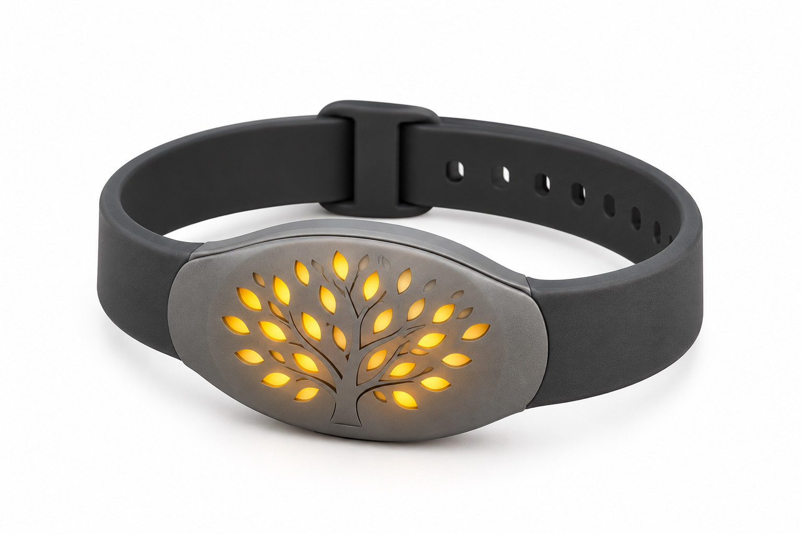
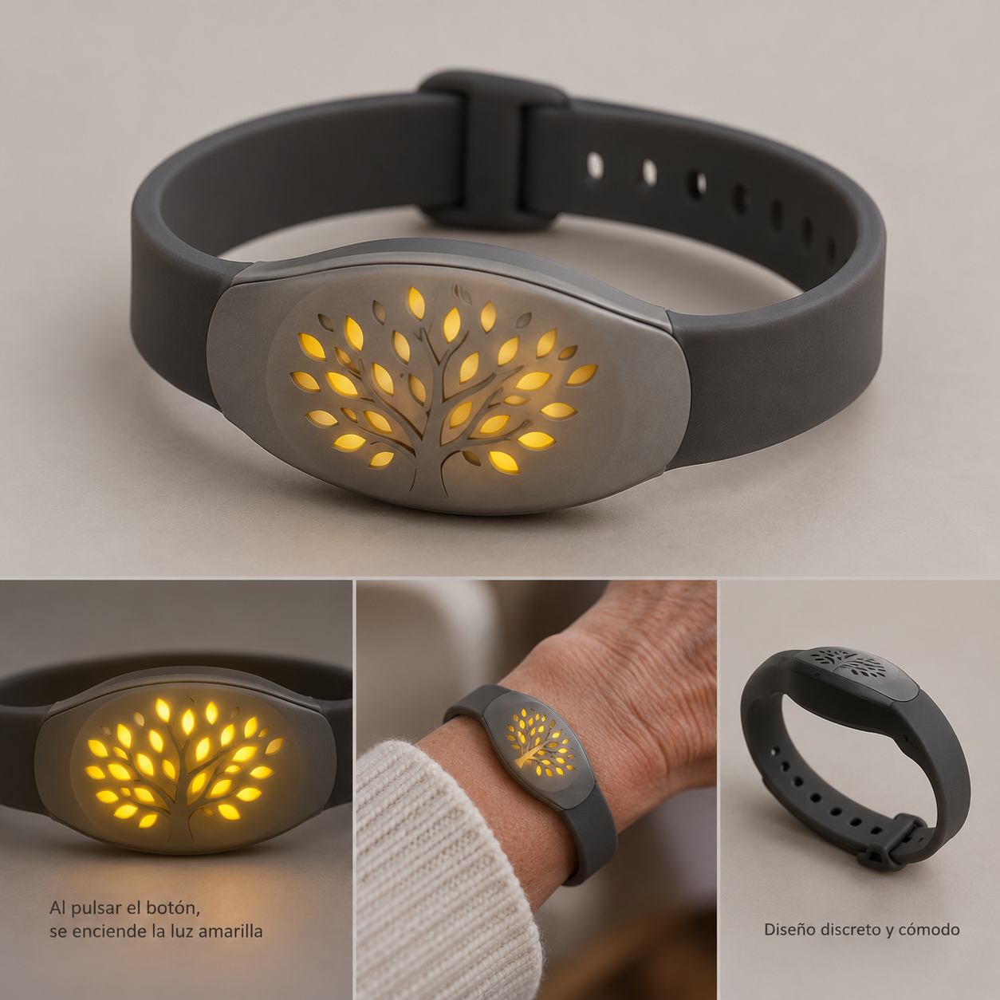

◎
Un botón fácil de encontrar
Al pulsarlo, se ilumina el motivo del árbol y se inicia la llamada de ayuda.
Una pulsera cómoda y discreta que, al pulsar su botón, llama automáticamente a emergencias y al contacto que elijas.

Fácil de usar
Un botón, sin complicaciones
Diseño cómodo
Para llevarla cada día
Con mucho cariño
Para cuidar a los tuyos
Una pulsera ligera y fácil de poner. Al pulsar el botón, llama a emergencias y al contacto que configures.
Al pulsarlo, se ilumina el motivo del árbol y se inicia la llamada de ayuda.
La pulsera llama a emergencias y al contacto elegido para que puedan atender la situación.
Su correa ajustable y su diseño discreto están pensados para llevarla cómodamente cada día.

Al pulsar el botón, la pulsera inicia una llamada automática a emergencias y al contacto que hayas elegido. Además, se ilumina el árbol amarillo.
Antes de usarla, configura y comprueba el contacto y la llamada de emergencia. La disponibilidad de las llamadas depende de la conexión y la cobertura.
Un diseño cómodo y discreto para regalar tranquilidad en el día a día.
Opiniones de ejemplo para mostrar el formato. Sustitúyelas por comentarios reales de compradores.
“Es ligera y el botón se entiende enseguida. La configuramos en familia antes de usarla.”
“Me gustó poder dejar elegido un contacto. La correa también resulta cómoda para el día a día.”
“Un regalo práctico para mi madre. Nos tomamos un rato para probar las llamadas y dejar todo listo.”
Cuéntanos qué te ha parecido la pulsera y ayuda a otras personas a elegir.
Al pulsar el botón central, se ilumina el motivo del árbol, tal como se muestra en la imagen del producto.
Al pulsar el botón inicia llamadas a emergencias y al contacto que hayas elegido y configurado previamente. La disponibilidad depende de la conexión y la cobertura.
La correa tiene varios orificios de ajuste para adaptarse a la muñeca.